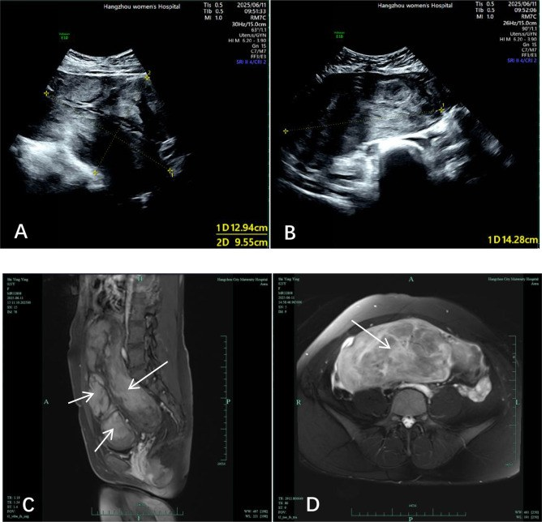
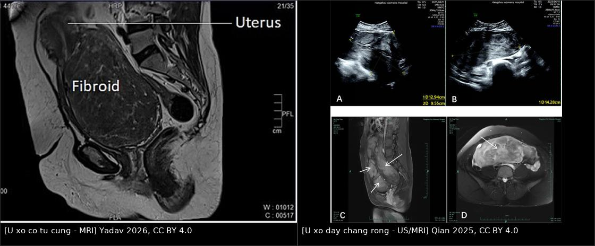
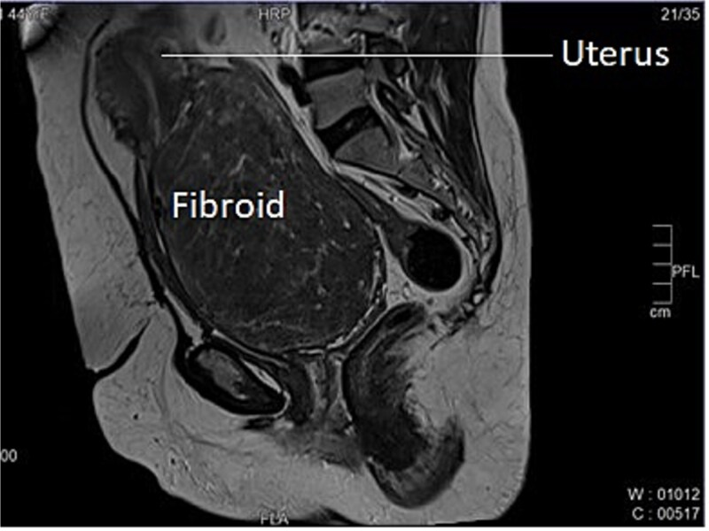
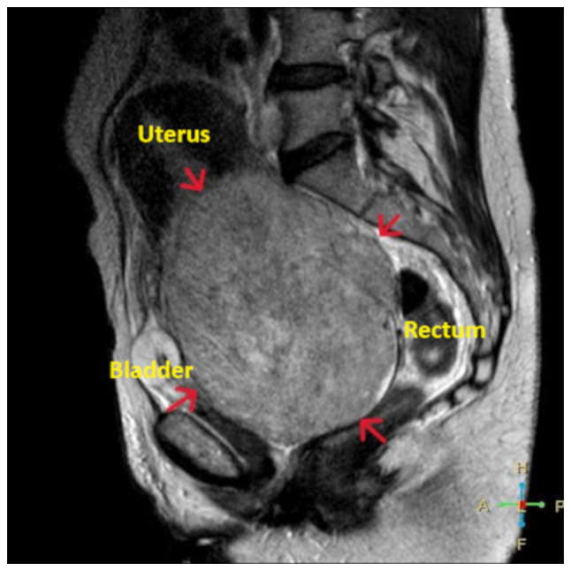
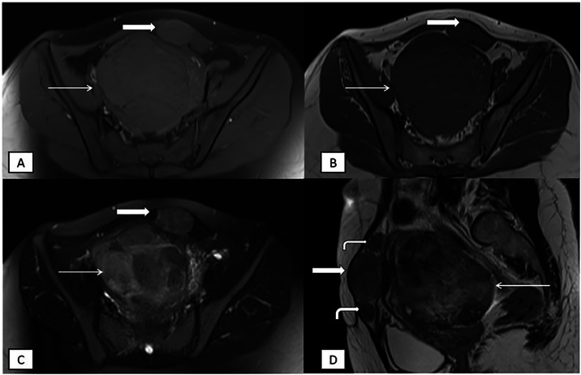

531 — U xơ cổ tử cung, u xơ ký sinh & u xơ dây chằng rộng: khối ngoài thân tử cung, chèn ép niệu quản & "lantern on St Paul's dome"
Tags: pattern:khoi-tu-cung pattern:khoi-ngoai-than-tu-cung vung:co-tu-cung vung:tieu-khung vung:phuc-mac score:FIGO protocol:MRI-tieu-khung
Mức chắc chắn (certainty): tổng hợp y văn (literature synthesis) — tổng hợp 5 ca nguyên văn có ảnh mở (cervical fibroid, giant endocervical fibroid, parasitic leiomyoma, broad ligament fibroid, cervical fibroid gây bí tiểu) + 1 bài review phân loại FIGO; số liệu đối chiếu trực tiếp PMCID.
1. Tổng quan bệnh học – cơ chế hình ảnh
- Tần suất – vì sao nhóm này quan trọng: u xơ tử cung (leiomyoma) là u lành phổ biến nhất, 20–40% phụ nữ sau 35 tuổi, tới 5,4–77% ở tuổi sinh sản tùy quần thể. Nhưng u xơ cổ tử cung chỉ chiếm 0,6% toàn bộ u xơ; dây chằng rộng là vị trí ngoài tử cung hay gặp nhất, < 1%; u xơ ký sinh (parasitic leiomyoma) cực hiếm — dưới 200 ca trong y văn, trung vị xuất hiện khoảng 4 năm sau mổ và đang tăng do morcellation.
- Vì sao vị trí ngoài thân tử cung khó: khối nằm trong khoang chật hẹp (cổ tử cung) hoặc giữa các lá dây chằng nên đẩy lệch niệu quản, bàng quang, trực tràng; mổ dễ chảy máu và tổn thương niệu quản. Đây là nhóm quyết định ngả mổ, thời gian mổ và biến chứng, khác hẳn u xơ thân tử cung.
- TẠI SAO T2W rất tối: u xơ gồm sợi cơ trơn + bó collagen dày → rất ít nước tự do → thời gian T2 ngắn, tín hiệu tối hơn cơ tử cung; bờ rõ nhờ vỏ giả (pseudocapsule) và mạch nuôi bao quanh (bridging vessels). Trên T1W u đồng tín hiệu cơ, sau gadolinium ngấm đồng nhất hoặc không đồng nhất.
- TẠI SAO tín hiệu thay đổi khi thoái hóa:
- Thoái hóa hyaline (hay gặp nhất): collagen tăng, nước giảm → T2 rất tối, gần như "đen".
- Thoái hóa nang/myxoid: dịch hoặc mucin → T2 rất sáng, có thể nhầm sarcoma/nang.
- Thoái hóa đỏ (red degeneration): máu bán cấp (methemoglobin) → T1 sáng, T2 tối–hỗn hợp; hay gặp trong thai kỳ (bài 532).
- Vôi hóa: mất tín hiệu mọi chuỗi xung, tăng đậm độ trên CT.
- TẠI SAO u xơ ký sinh sống được ngoài tử cung: mảnh u xơ rơi vào ổ bụng (thường sau morcellation) cấy lên phúc mạc, tân mạch hóa từ mạc nối/mạc treo và lớn dần dưới ảnh hưởng hormone. Vì có nguồn máu riêng, khối không nối với tử cung hoặc chỉ còn dải xơ/ mạch cầu nối — đây là chìa khóa hình ảnh.
- Phân loại FIGO (bổ sung cho 542): type 8 = vị trí khác, gồm cổ tử cung, ký sinh, dây chằng rộng. Nhóm này không xếp vào 0–7 và không quyết định ngả soi buồng.
- Định lượng cốt lõi:
- U xơ cổ tử cung "khổng lồ" được mô tả khi đường kính > 15 cm; các ca lớn thường gây bí tiểu, ứ nước thận.
- Nguy cơ chuyển dạng ác tính của u xơ rất thấp: 0,4–0,8% — nhưng lớn nhanh, T2 không đồng nhất, hạn chế khuếch tán mạnh là cờ đỏ cần MRI + theo dõi sát.
- U xơ ký sinh: trung vị 4 năm sau mổ; ca báo cáo có 7 năm; tổn thương có thể nhiều ổ dọc đường trocar cũ.
2. Mẫu hình + chẩn đoán phân biệt theo vị trí (gamut)
- Cổ tử cung (intracervical hoặc extracervical trước/sau/bên): khối T2 tối, bờ rõ, làm cổ tử cung phình to, không thấy cổ tử cung riêng ở ca lớn; tử cung nằm trên khối → dấu "lantern on St Paul's dome" (đèn lồng trên vòm thánh Paul). Triệu chứng: bí tiểu, tiểu rắt, táo bón, ra máu sau giao hợp. Gamut: u xơ cổ tử cung, ung thư cổ tử cung, polyp cổ tử cung sa, sa sinh dục, đảo ngược tử cung.
- Dây chằng rộng (broad ligament):
- U xơ dây chằng rộng thật (true): phát sinh từ mô liên kết dưới phúc mạc của dây chằng, tách khỏi tử cung.
- U xơ dây chằng rộng giả (false): mọc từ tử cung lan vào dây chằng — vẫn còn dấu móc (claw sign) với tử cung.
- Hệ quả: khối đẩy tử cung sang bên đối diện, niệu quản bị đẩy ra ngoài/ra trước, dễ ứ nước thận.
- Phúc mạc – mạc treo – thành bụng (u xơ ký sinh): khối T2 tối, T1 đồng tín hiệu, ngấm thuốc, có thể hạn chế khuếch tán nhẹ; nhiều nốt dọc vết mổ/trocar. Gamut: di căn phúc mạc (carcinomatosis), u mạc treo, GIST, hạch, endometrioma, u xơ ký sinh.
- Sừng tử cung/đoạn dưới: u xơ có cuống hoặc u xơ ký sinh dính sừng → dễ nhầm chửa góc/chửa ngoài tử cung; cần hCG và MRI.
- Gợi nhớ: khối T2 tối + bờ rõ + vỏ giả + mạch bao quanh = u xơ cho đến khi chứng minh ngược lại; vị trí ngoài thân tử cung + mất liên tục với tử cung = nghĩ ký sinh hoặc dây chằng rộng thật.

U xơ dây chằng rộng phải khổng lồ: siêu âm (A, B) và MRI T1/T2 (C, D) — khối lấp đầy tiểu khung, đè đẩy tử cung và các tạng. Nguồn: Qian 2025, CC BY 4.0.3. Bảng so sánh phân biệt (ma trận đối chiếu)
| Thực thể (entity) | Hình ảnh điển hình (US/CT/MRI) | Chốt vào (rule-in) | Chốt loại (rule-out) | Gợi ý xác nhận |
|---|---|---|---|---|
| U xơ cổ tử cung | Khối T2 tối, bờ rõ, phình cổ tử cung; tử cung nằm trên khối ("lantern"); có thể ứ nước thận | Tử cung tách rời, nằm trên khối cổ + T2 tối + vỏ giả | Cổ tử cung còn nguyên, khối ở thân tử cung → không phải type 8 | MRI sagittal T2 + khám; siêu âm bàng quang/niệu quản |
| U xơ ký sinh | Khối T2 tối ngoài tử cung, T1 đồng tín hiệu, ngấm thuốc; nhiều nốt dọc trocar; có thể có mạch nối với mạc treo | Tiền sử morcellation + nhiều khối T2 tối ngoài tử cung + không có claw sign | Có claw sign rõ với tử cung → u xơ dưới thanh mạc | MRI bụng–chậu; so phim cũ; mô bệnh sau cắt |
| U xơ dây chằng rộng | Khối lớn một bên, đẩy tử cung đối diện, niệu quản ra ngoài; T2 tối, bờ rõ | Khối một bên dây chằng + tử cung bị đẩy + T2 tối | Khối trong buồng tử cung → không phải | MRI coronal/sagittal; CT niệu quản nếu ứ nước |
| U xơ dưới thanh mạc có cuống | Khối T2 tối nối với tử cung bằng cuống chứa mạch | Thấy cuống + claw sign + mạch nuôi từ tử cung | Mất hoàn toàn liên tục → nghĩ ký sinh | MRI đa bình diện; Doppler cuống |
| U sợi buồng trứng/fibrothecoma | Khối T2 rất tối, bờ rõ, không có vỏ giả/mạch bao quanh, buồng trứng lành tách biệt | T2 tối + không liên quan tử cung + không ngấm mạnh | Có bridging vessels + claw sign → u xơ | MRI; nội tiết (estradiol) nếu nghĩ fibrothecoma |
| GIST/u mạc treo | Khối mạc treo, ngấm mạnh, có thể hoại tử; không có claw sign | Nguồn gốc mạc treo + ngấm mạnh + không liên quan tử cung | T2 rất tối đồng nhất + vỏ giả → u xơ | CT/MRI + mô bệnh |
| Ung thư cổ tử cung | Khối cổ tử cung bờ không rõ, T2 trung gian–cao, ADC thấp, xâm lấn tham số; hạch | Bờ không rõ + xâm lấn + hạn chế khuếch tán mạnh | Bờ rõ, T2 tối, vỏ giả → u xơ | Sinh thiết cổ tử cung; MRI phân giai đoạn |
| Sarcoma cơ tử cung | Khối lớn nhanh, T2 không đồng nhất, hoại tử, ADC thấp, ngấm mạnh không đều | Lớn nhanh + hoại tử + hạn chế khuếch tán mạnh | T2 tối đồng nhất, không hoại tử → u xơ lành | MRI + mô bệnh; nguy cơ chuyển dạng 0,4–0,8% |

Trái: u xơ cổ tử cung — tử cung nằm trên khối ("lantern on St Paul's dome"). Phải: u xơ dây chằng rộng — khối chiếm trọn tiểu khung, đè đẩy tạng. Ảnh ghép letterbox, không crop/kéo giãn; nguồn ởimages/CREDITS.md.
4. Protocol chụp + hệ phân loại & xử trí
- Siêu âm (đầu tay): transabdominal + transvaginal; đánh giá kích thước, vị trí, số lượng, độ tối T2-tương ứng trên US (hypoechoic), bàng quang, ứ nước thận hai bên. Siêu âm kém khi khối lớn đẩy lệch tạng — đây là lý do các ca lớn đều cần MRI.
- MRI tiểu khung (chốt): T2W sagittal + axial + coronal (bắt buộc để thấy tương quan tử cung–cổ tử cung–khối), T1W, DWI/ADC, T1 fat-sat sau gadolinium. Đánh giá: claw sign (khối thuộc tử cung hay ngoài tử cung), bridging vessels, bờ/vỏ giả, thành phần hoại tử, niệu quản có bị đẩy/ứ nước.
- CT bụng–chậu có cản quang: khi cần đánh giá niệu quản, ứ nước thận, urinoma hoặc khi MRI không khả dụng; không dùng để chẩn đoán bản chất u xơ.
- Đánh giá niệu quản trước mổ: siêu âm/CT tìm ứ nước thận; với khối cổ tử cung/dây chằng rộng lớn, đẩy lệch, các ca đều đặt stent niệu quản hai bên trước mổ để giảm nguy cơ cắt/tổn thương niệu quản. Không có ngưỡng kích thước tuyệt đối — quyết định theo độ lệch giải phẫu trên MRI.
- Phân loại: FIGO 2011 (Munro) type 8 cho cổ tử cung/ký sinh/dây chằng rộng; với u xơ dây chằng rộng ghi thêm true vs false.
- Xử trí (khung):
- Cổ tử cung: cắt u xơ cổ tử cung (myomectomy) nếu mong con; cắt tử cung toàn phần nếu không còn nhu cầu sinh sản/khối quá lớn. UAE là lựa chọn ít xâm lấn; lưu ý nhánh nuôi có thể từ động mạch buồng trứng → cần chụp động mạch chủ (aortogram) và nút cả nhánh buồng trứng nếu cần.
- Dây chằng rộng: mổ bóc u bảo tồn theo đúng mặt phẳng vỏ u, xác định niệu quản trước khi cắt; khối lớn có thể cần mổ mở.
- Ký sinh: cắt bỏ toàn bộ (nội soi nếu được), không làm tổn thương tạng dính; gửi mô bệnh để loại sarcoma/GIST.
- U xơ có cuống sa qua cổ tử cung: cắt polyp/u xơ qua âm đạo sau khi xác định rõ cổ tử cung (tránh cắt nhầm tử cung lộn ngược — bài 544).
flowchart TD
A[Khối tiểu khung ngoài thân tử cung] --> B[Siêu âm + Doppler]
B --> C{MRI tiểu khung T2/T1/DWI/CE}
C --> D{Có claw sign với tử cung?}
D -->|Có| E[U xơ dưới thanh mạc có cuống]
D -->|Không| F{Vị trí}
F -->|Cổ tử cung| G[U xơ cổ tử cung - type 8]
F -->|Dây chằng rộng| H[U xơ dây chằng rộng true/false]
F -->|Phúc mạc/mạc treo/nhiều nốt| I[U xơ ký sinh - sau morcellation]
G --> J{Có ứ nước thận hoặc đẩy lệch niệu quản?}
H --> J
J -->|Có| K[Đặt stent niệu quản trước mổ]
J -->|Không| L[Mổ bóc u hoặc cắt tử cung theo nhu cầu sinh sản]
K --> L
- Theo dõi sau mổ: siêu âm 3–6 tháng nếu bảo tồn; tái phát sau morcellation có thể nhiều năm — giáo dục bệnh nhân về triệu chứng và tránh morcellation không kiểm soát ở u nghi ngờ.
5. Biến thể bình thường và cạm bẫy
- "Lantern on St Paul's dome": hình ảnh tử cung ngồi trên khối cổ tử cung khổng lồ — nếu chỉ đọc là "u xơ thân tử cung" sẽ mổ sai ngả và không chuẩn bị kiểm soát niệu quản.
- Khối cổ tử cung sa ra âm đạo dễ nhầm sa tử cung (procidentia) hoặc đảo ngược tử cung; không cắt "polyp" trước khi nhìn rõ cổ tử cung — cắt nhầm có thể gây chảy máu ồ ạt.
- U xơ ký sinh vs carcinomatosis: nhiều nốt phúc mạc T2 tối, đồng tín hiệu cơ, ngấm thuốc ở người có tiền sử morcellation — đừng mặc định di căn; nhưng vẫn phải loại sarcoma/di căn bằng mô bệnh.
- U xơ thoái hóa myxoid/nang: T2 rất sáng, có thể nhầm sarcoma/nang buồng trứng; tìm vỏ giả + mạch bao quanh + không hoại tử lan tỏa.
- Bỏ sót niệu quản: niệu quản đi sát bờ ngoài cổ tử cung, bị đẩy ra ngoài bởi khối dây chằng rộng; không thấy niệu quản trên MRI/CT = chưa an toàn để mổ.
- UAE không đủ: u xơ cổ tử cung có thể được nuôi bởi động mạch buồng trứng; nút chỉ động mạch tử cung → thất bại/thể tích giảm không đủ. Cần aortogram khi nghi.
- Chuyển dạng ác tính: chỉ 0,4–0,8%, nhưng lớn nhanh sau mãn kinh, T2 không đồng nhất, ADC rất thấp, hoại tử → MRI + mổ lấy mô, không theo dõi mù.
6. Tự lượng giá — Blind Quiz ngay trên trang tĩnh
Ca 1 — Nữ 44 tuổi, bí tiểu, ra máu sau giao hợp; siêu âm thấy khối lớn vùng chậu.

- Gợi ý: chú ý vị trí tử cung so với khối.
- Câu hỏi: Dấu hiệu đặc trưng là gì? Vì sao phải đánh giá niệu quản trước mổ? Chẩn đoán phân biệt chính?
Bấm để hiện đáp án (findings + chẩn đoán)
- Dấu hiệu: khối T2 tối, bờ rõ, chiếm toàn bộ cổ tử cung; tử cung nằm ngay trên khối — dấu "lantern on St Paul's dome".
- Chẩn đoán: u xơ cổ tử cung (cervical fibroid) — khối lớn ~20 × 16 cm trong ca này.
- Vì sao đánh giá niệu quản: khối cổ tử cung đẩy lệch và chèn ép niệu quản → ứ nước thận; ca này được đặt stent niệu quản hai bên trước mổ.
- Nguồn: Yadav P et al., J Surg Case Rep 2026, PMC12998220, CC BY 4.0.
Ca 2 — Nữ 52 tuổi, bụng to, đau lưng; siêu âm nghi khối phần phụ.

- Gợi ý: khối lớn chiếm tiểu khung, các tạng bị đẩy.
- Câu hỏi: Khối xuất phát từ đâu? Tìm dấu hiệu biến chứng trên CT. Vì sao cần stent và theo dõi thận sau mổ?
Bấm để hiện đáp án (findings + chẩn đoán)
- Dấu hiệu: khối T2 tối, bờ rõ, xuất phát từ cổ tử cung/đoạn dưới, đè bàng quang ra trước, trực tràng ra sau; trên CT kèm ứ nước bể thận hai bên và urinoma quanh thận trái.
- Chẩn đoán: u xơ cổ tử cung khổng lồ (> 15 cm) gây ứ nước thận hai bên.
- Xử trí: stent niệu quản, cắt tử cung; stent rút sau 3 tháng, chức năng thận hồi phục.
- Nguồn: Thanasa A et al., Med Int (Lond) 2025, PMC12329397, CC BY 4.0.
Ca 3 — Nữ 38 tuổi, tiền sử mổ nội soi bóc u xơ có morcellation 7 năm trước; đau bụng tái diễn, nhiều khối trong ổ bụng.

- Gợi ý: nhiều khối ngoài tử cung, dọc thành bụng; không có claw sign.
- Câu hỏi: Chẩn đoán? Dấu hiệu MRI nào giúp phân biệt với di căn phúc mạc? Yếu tố nguy cơ nào trong tiền sử?
Bấm để hiện đáp án (findings + chẩn đoán)
- Dấu hiệu: nhiều khối T1 đồng tín hiệu, T2 tối không đồng nhất, ngấm thuốc mạnh, hạn chế khuếch tán nhẹ, dọc bờ sau cơ thẳng bụng trái (đường trocar cũ); khối lớn ở đáy tử cung kèm u xơ.
- Chẩn đoán: u xơ ký sinh (parasitic leiomyoma) sau laparoscopic myomectomy có power morcellation.
- Phân biệt: di căn phúc mạc thường T2 trung gian–cao, ADC rất thấp, có dịch ổ bụng, hạch; u xơ ký sinh T2 tối, đồng tín hiệu cơ, bờ rõ.
- Nguồn: Varshney E et al., Radiol Case Rep 2026, PMC12743411, CC BY-NC-ND 4.0 (giữ nguyên ảnh, không crop/ghép).
Bài liên quan chéo
- 542 – U xơ dưới niêm mạc (FIGO 0–2) & can thiệp bảo tồn
- 520 – U xơ tử cung FIGO, adenomyosis & nội mạc
- 544 – Đảo ngược tử cung không do sinh
- 518 – Morcellation & LPD (leiomyomatosis peritonealis disseminata)
Ảnh
images/531_u-xo-ngoai-than_CECTU_MRI_PMC12998220.jpg— MRI u xơ cổ tử cung, Yadav 2026, CC BY 4.0.images/531_u-xo-ngoai-than_CECTU_MRI-sag_PMC12329397.jpg— MRI u xơ cổ tử cung khổng lồ, Thanasa 2025, CC BY 4.0.images/531_u-xo-ngoai-than_CT-hydro_PMC12329397.jpg— CT ứ nước thận hai bên, Thanasa 2025, CC BY 4.0.images/531_u-xo-ky-sinh_MRI_PMC12743411.jpg— MRI u xơ ký sinh, Varshney 2026, CC BY-NC-ND 4.0.images/531_u-xo-day-chang-rong_US-MRI_PMC12819652.jpg— siêu âm + MRI u xơ dây chằng rộng, Qian 2025, CC BY 4.0.images/composite_co-tu-cung-vs-day-chang-rong.jpg— ảnh ghép đối chiếu, letterbox không crop.
Không dùng để chẩn đoán độc lập khi chưa có người hướng dẫn.